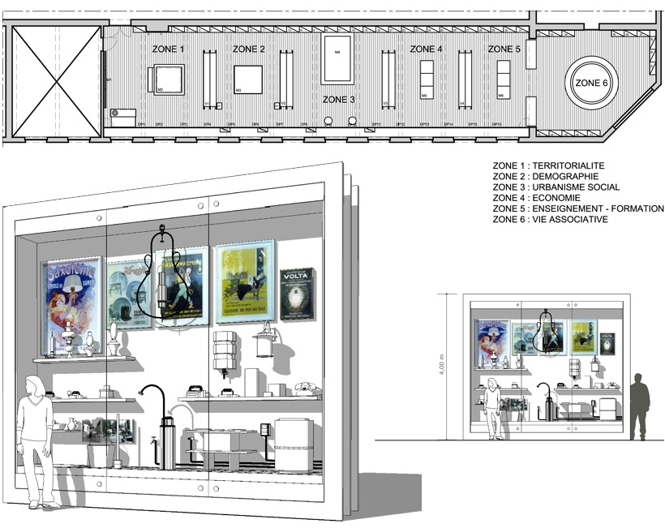
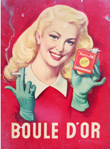
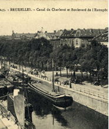
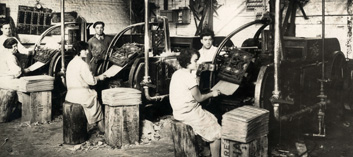
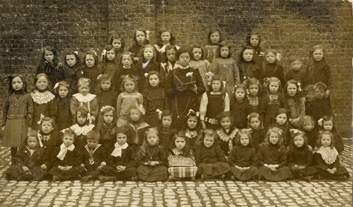
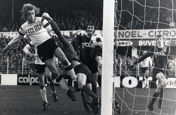
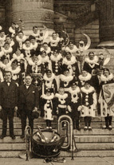
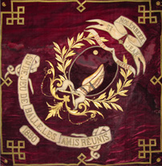
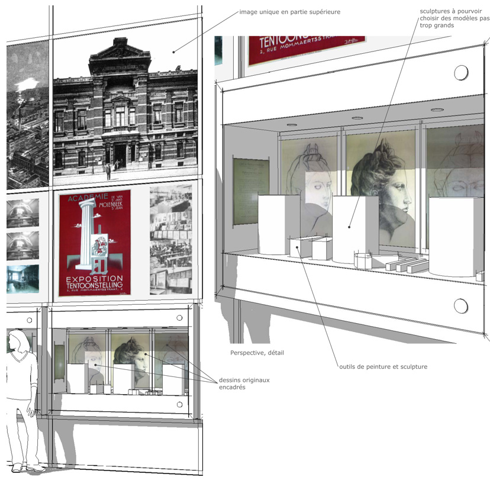
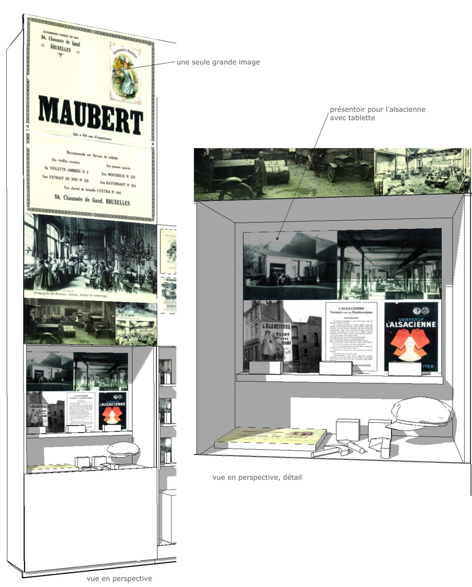

Venez découvrir
le MoMuse !
Où ?
Rue Mommaerts 2A - 1080 Molenbeek-Saint-Jean
Quand ?
Mardi : de 12 à 17 heures
Mercredi : de 12 à 17 heures
Jeudi : de 12 à 17 heures
Dimanche : de 13 à 18 heures
Lundi, vendredi et samedi : Fermé
Fermeture annuelle du 15 juillet au 02 septembre 2018 inclus.
Fermeture des jours fériés : dimanche 1er avril 2018,
mardi 1er mai 2018, jeudi 10 mai 2018, dimanche 20 mai 2018,
jeudi 1er novembre 2018, dimanche 11 novembre 2018
et mardi 25 décembre 2018.
Informations générales
Qui fait quoi au MoMuse ?
Arnaud Matagne
Directeur MoMuse et Service Expositions - Service des Cultures
Dr. Sven Steffens
Conservateur MoMuse – Archiviste communal
Bernard Gauditiabois
Gestionnaire administratif, logistique et technique MoMuse
Le MoMuse recherche et forme ses bénévoles pour assurer les ouvertures publiques tout au long de l’année.
Merci d’envoyer votre candidature par courrier à l’adresse du MoMuse.
Contact et accès
MoMuse - Musée communal de Molenbeek Saint-Jean
Rue Mommaerts 2A
1080 Molenbeek-Saint-Jean
Tél. 02 - 412.08.12
Email : momuse@molenbeek.irisnet.be
Métro : Comte de Flandre, Etangs Noirs, (Lignes 1 et 5), Ribaucourt (Ligne 6)
Possibilité de se garer au parking Brunfaut (rue Fernand Brunfaut)
Visites guidées par l’équipe du Musée sur rendez-vous :
Tél. 02 - 412.08.12
Email : momuse@molenbeek.irisnet.be
Le MoMuse est accessible aux personnes à mobilité réduite.
Heures d’ouverture
Mardi : de 12 à 17 heures
Mercredi : de 12 à 17 heures
Jeudi : de 12 à 17 heures
Dimanche : de 13 à 18 heures
Lundi, vendredi et samedi : Fermé
Fermeture annuelle du 15 juillet au 02 septembre 2018 inclus.
Fermeture des jours fériés : dimanche 1er avril 2018,
mardi 1er mai 2018, jeudi 10 mai 2018, dimanche 20 mai 2018,
jeudi 1er novembre 2018, dimanche 11 novembre 2018
et mardi 25 décembre 2018.
Tarifs
| Prix d’entrée plein à l’Exposition permanente | 5 € |
| Seniors, Omnio, Molenbeekois, moins valides, Fed+ | 3 € |
| Carte Jeunes Européenne | 2 € |
| Art. 27 et demandeurs d’emploi | 1,25 € |
| Moins de 18 ans, étudiants, enseignants, chercheurs, ICOM (commission internationale de musées) | gratuit |
| Groupes (minimum 10) : Non-Molenbeekois | 3 € par personne |
| Groupes (minimum 10) : Molenbeekois | 2 € par personne |
Brussels Card acceptée
Possibilité de payement par Bancontact
Le projet du musée communal
MoMuse: Molenbeek se souvient.
Une commune, c’est avant tout une histoire. Et celle de Molenbeek est loin d’être anodine! Pour vous la raconter, il fallait un projet, un endroit, une équipe, une vision. En octobre 2004, le Collège des Bourgmestres et Echevins, sous l’impulsion de Philippe Moureaux, a donné son feu vert à la création d’un Musée dédié à l’histoire de Molenbeek. Ses objectifs: y préserver les patrimoines culturel et historique acquis par la commune et, bien entendu, partager petites histoires et grande Histoire avec ses habitants. Parce que le futur d’une commune se construit sur son passé.
C’est dans l’une des ailes d’un vaste édifice classé de 1879, œuvre de l’architecte Joachim Benoît, que le MoMuse a trouvé un lieu à la hauteur de ses ambitions. A ses côtés, l’Académie de Dessin et des Arts Visuels, présente dans les locaux depuis leur construction, et, depuis 2005, une partie de la Maison des Cultures et de la Cohésion Sociale. Avec l’ouverture du musée prévue en 2012, le Centre historique de Molenbeek-Saint-Jean deviendra ainsi un véritable pôle culturel.
MoMuse: tout un programme!
Tout d’abord, le MoMuse est une vitrine du patrimoine historique de la commune, depuis ses origines jusqu’à aujourd’hui, avec un accent tout particulier mis sur les XIXe et XXe siècles. Le musée permettra aux visiteurs de comprendre l’évolution de ce petit territoire de quelques 6km2, ayant d’abord connu un développement rural durant de nombreux siècles, puis une industrialisation intense à partir des années 1840, suivie d’une désindustrialisation non sans conséquences, et enfin, à l’aube des années 1960, une croissance urbanistique intense. Autant d’événements qui ont profondément modifié les modes de vie et l’essence même de la commune.
Le MoMuse, c’est aussi un outil de cohésion sociale, un endroit où prendre conscience de son environnement. Un véritable lieu de vie pour les habitants de la commune comme pour les nouveaux arrivants. Car Molenbeek a toujours été une terre d’accueil et, depuis plus d’un siècle, les vagues d’immigration successives et variées participent activement à la vie de la commune, à son développement économique et culturel, à sa richesse.
Le MoMuse, enfin, se veut un lieu d’ouverture. Un lieu dans lequel chacun puisse se retrouver, quels que soient ses origines, sa culture, ses croyances ou ses choix. Un lieu à s’approprier, un territoire à découvrir, un environnement à apprivoiser. Pour qu’au bout du compte, les habitants de la commune y participent activement au lieu d’y vivre passivement.
MoMuse: le musée
L’espace dédié à l’exposition permanente est divisé en 6 zones thématiques, liées entre elles par une même ligne graphique:
    
 
Molenbeek-Saint-Jean: un saint, un ruisseau et un moulin.
Une géographie historique et humaine.
Et si nous commencions par faire le tour du propriétaire? Car une commune, c’est d’abord un territoire.
Cette première étape nous invite à découvrir le cadre naturel et le territoire de la commune,
au travers d’explications toponymiques éclairant sous un jour nouveau des noms de lieux pourtant
familiers mais dont la signification reste bien souvent obscure.
Des chartes et documents anciens
nous montrent par ailleurs la domination exercée jusqu’en 1795 par la Ville de Bruxelles sur le
village de Molenbeek, tandis que deux grandes cartes, une photo aérienne et une maquette topographique
en 3D illustrent la transformation du village en commune moderne.
Au travers du thème de l’eau (ruisseaux, étangs, canaux) et de sa maîtrise, mais aussi et surtout de l’importance capitale du Canal de Charleroi, nous découvrons également sous un angle original l’histoire de la commune et de son expansion.
Enfin, le destin des 4 portes (la Porte de Ninove, de Flandre, du Rivage et de Laeken) nous éclaire sur l’évolution de la frontière entre Molenbeek et Bruxelles-Ville.
Qui est mon voisin? La diversité à Molenbeek.
Une population en mouvement. Les gens – La démographie – Les vagues migratoires – Les rites de passage et traditions
Une commune, ce sont surtout des hommes et des femmes. D’ailleurs aussi bien des habitants de la commune que des personnes en transit, des familles installées ici depuis toujours comme de nouveaux arrivants…
Alors qui sont-ils? D’où viennent-ils? Et comment vivent-ils?
C’est par ces questions
très simples que nous abordons des domaines aussi variés que l’origine géographique et sociale de
ces hommes et de ces femmes, l’histoire des différentes vagues d’immigration… Et pour donner vie à
ce qui ne pourrait être que des chiffres, c’est au travers d’histoires personnelles et familiales
d’habitants de la commune, largement illustrées de documents et d’objets, que nous voyageons dans
le temps. Nous partageons ainsi le temps d’une visite le destin de familles belges ou étrangères,
souvent d’origine modeste, qui ont participé à faire de Molenbeek ce qu’elle est aujourd’hui.
Il est à noter que Molenbeek ayant longtemps été une commune autant rurale qu’industrielle, ces deux aspects sont développés ici côte-à-côte. Car bien au-delà des origines fondamentalement différentes de ces deux modes de vie, la fracture entre ces deux mondes s’est prolongée pour de multiples raisons bien après le début du XXe siècle.
Une courbe de croissance globale de la population molenbeekoise depuis le début du XIXe siècle nous permettra quant à elle de prendre conscience de l’extraordinaire évolution démographique de la commune, et d’en expliquer par ailleurs les points marquants.
Enfin, parce que la vie ne se résume heureusement pas à des statistiques, nombre d’objets et documents illustreront la grande variété de pratiques et traditions des molenbeekois par le biais des rites de passage entourant, dans différentes cultures et religions, la naissance, le passage de l’enfance à l’adolescence, le mariage et le décès.
Partout dans cette zone, une grande fresque de portraits se fera l’écho de toutes ces informations, montrant au travers de regards, de visages, d’attitudes, la grande diversité des molenbeekois d’hier et d’aujourd’hui.
Chez moi, à Molenbeek.
Balade à travers les rues, les plaines et les habitations.
Le développement urbanistique et l’évolution du logement.
Rurale à l’origine, la commune connaît à la fin du XIXe siècle un développement industriel rapide et intense, au point d’être surnommée le petit Manchester. Le tissu urbain s’en trouve profondément modifié: tandis que les constructions s’étendent vers l’ouest, la partie déjà urbanisée change elle aussi de visage pour atteindre des densités de population très élevées par rapport au reste du territoire communal.
Sur le plan social, cette période a évidemment un impact très marqué: la population ouvrière de la commune, longtemps majoritaire, connaît une précarité de plus en plus grande, précarité encore renforcée au cours de la phase de déclin industriel qui suivra, et qui verra bon nombre de molenbeekois sombrer dans la misère. Ces conséquences sociales, pour une partie de la commune dite «bas Molenbeek», seront d’ailleurs et malheureusement durables.
Aux changements économiques et sociaux s’ajoutent d’autres bouleversements, tout aussi importants pour comprendre l’évolution de la commune. La construction du métro, par exemple, va elle aussi participer à la transformation profonde du tissu urbain d’une partie de la commune, avec toutes les conséquences socio-économiques que cela implique pour une grande partie des habitants.
D’autres aspects du développement urbanistique sont développés ici, tels que l’implantation de bâtiments industriels ou les grandes réalisations que sont le creusement et les modifications du canal de Charleroi, l’implantation du site de Tours et Taxis, la création du Boulevard Léopold II, etc.
Plusieurs espaces de cette zone seront également consacrés à la comparaison entre un logement ouvrier et une habitation bourgeoise du début du XXe siècle, ainsi qu’aux nombreux progrès techniques qui ont remodelé au fil du temps le sens du mot confort.
Un dur labeur. Travailler à Molenbeek.
Le développement économique – petits métiers, grandes entreprises
Allez, au travail! Et commençons d’abord par une présentation de divers métiers aujourd’hui disparus : gantier, bonnetier, brasseur, horticulteur, maraîcher, éleveur de chevaux, fabricant de cigarettes et bien d’autres. Au travers de ces petits métiers, mais aussi des moyennes ou des grandes entreprises ayant choisi Molenbeek pour s’installer, différents secteurs d’activités, remarquablement présents dans la commune, sont présentés et développés. On se rendra compte à cette occasion de l’influence primordiale qu’a eu la mécanisation sur tous les aspects de la vie quotidienne.
On notera également que nombre d’entreprises se sont implantées dans la commune, y sont restées souvent longuement avant que le manque de possibilités de développement structurel ne les pousse à déménager dans des lieux qui correspondaient mieux aux nécessités de ce développement.
Enfin, qui dit entreprises et commerce dit moyens de transport. Chemin de fer, tramways, routes et voies navigables ont joué un rôle fondamental dans l’essor économique de la commune pendant plusieurs décennies, au cours des XIXe et XXe siècles. #Des vitrines présentant objets, cartes et plans reflètent les progrès qui ont été réalisés en matière de transport et de mobilité dans notre commune. Une évolution toujours en cours, d’ailleurs.
Un banc plus loin. L’enseignement à Molenbeek.
Du travail des enfants à la formation des adultes
Si l’accès à l’enseignement fut, à l’origine, un moyen pour beaucoup d’atteindre un statut social plus élevé, il est devenu au fil du temps une réalité quotidienne de notre mode de vie et, surtout, un facteur d’intégration et de cohésion sociale dans une société de plus en plus pluriculturelle.
Partant du travail des enfants durant la fin du XIXe et le début du XXe siècle, nous évoquons ici les lois concernant l’enseignement et l’obligation scolaire. Mais, plus largement, c’est toute l’évolution de l’enseignement qui est reprise sous ce thème. Outre la législation imposée aux plus jeunes à partir de 1914, c’est tout l’aspect de l’évolution pédagogique qui est commenté. Qui sont les élèves? Quelles sont les matières et modes d’enseignement? De quels outils les enseignants disposent-ils pour les former? A quoi peuvent bien servir les voyages scolaires?
Autant de questions, autant de réponses, parfois incomplètes, mais dans lesquelles chacun peut se retrouver, faisant son propre chemin vers la madeleine de Proust qu’est pour chacun de nous son enfance écolière, et ouvrant la voie aux comparaisons les plus diverses entre une époque souvent révolue et la réalité de l’école actuelle.
Plaisirs et distractions. S’amuser à Molenbeek!
Vivre ensemble: la vie associative, les loisirs, le patrimoine artistique et culturel
La vie associative a toujours occupé une place très importante à Molenbeek. #Depuis la seconde moitié du XIXe siècle en effet, de nombreuses associations littéraires, musicales, sportives ou politiques, ont joué le rôle de lieux de rassemblements et de rencontres. Certaines étaient directement liées à un mouvement ou un parti politique, d’autres étaient constituées sur base d’une appartenance linguistique ou religieuse, d’un attachement à un lieu d’origine commun. Certaines encore rassemblaient sur base de l’appartenance à une même entreprise, d’autres enfin se voulaient totalement indépendantes. Nombre d’entre elles possédaient leur drapeau ou bannière, leur emblème, ainsi qu’un local dans lequel se tenaient les activités de l’association.
Mais, fort heureusement, il n’y avait pas que les associations. De nombreux autres loisirs étaient accessibles: théâtres, salles de cinéma, salles de danse, etc. De vastes complexes sportifs, comme le Daring, qui comportait une piscine solarium, des terrains de tennis et de football, proposaient également de nombreuses activités. Le cyclisme eut aussi droit à une place privilégiée à l’époque du vélodrome du Karreveld. Les loisirs étaient nombreux et accessibles à tous… en fonction bien sûr de l’argent qu’on était prêt à y consacrer!
Cette zone consacrée aux loisirs est elle-même divisée en quatre espaces distincts. #Le premier est dédié aux sports qui ont été ou sont encore pratiqués sur le territoire de la commune. Le second reflète les nombreux aspects de la vie culturelle: cinéma, théâtre, danse mais aussi fanfares et harmonies, qui ont connu un réel succès à une certaine époque. Le troisième espace est, quant à lui, consacré aux grandes manifestations: processions, commémorations, fêtes traditionnelles, etc. Le quatrième et dernier espace enfin nous permet de découvrir ou redécouvrir les personnalités qui ont marqué Molenbeek, qu’elles y soient nées, y aient vécu ou y soient simplement passées. Photos et aperçus biographiques mettront en lumière ces célèbres Molenbeekois d’un jour ou de toujours.
Les différentes missions du MoMuse
La conservation, l’inventoriage et l’extension des collections du MoMuse.
Le musée possède un très beau début de collections d’objets, de matériel iconographique et d’archives. D’une part, celles-ci se composent de fonds de simples particuliers que la commune possédait déjà ou qui ont été récemment légués. D’autre part, elles ont été complétées grâce à une politique d’emprunts, de mises en dépôts ou d’acquisitions.
Pour entrer dans ces collections, il faut que l’objet ou le document en question ait un rapport direct avec Molenbeek. Soit qu’il ait appartenu à un habitant de la commune, soit qu’il provienne de l’une des différentes institutions communales, soit encore qu’il ait été transmis à une personne ou une institution qui n’est plus établie sur le territoire de Molenbeek-Saint-Jean.
Les collections du musée se composent actuellement de plus d’un millier d’objets, dont plus de 50% ont été scannés et inventoriés. Quant au matériel iconographique, il compte plus de 2.000 cartes postales ou cartes-vues et plus de 1.500 photographies.
Patiemment, ce long travail d’inventoriage se poursuit dans la plus grande rigueur, et devrait normalement s’achever dans les deux années à venir. Une fois les pièces cataloguées, elles sont conservées dans des conditions qui répondent aux normes nationales et internationales les plus sévères.
Le Centre de documentation du MoMuse:
développement, conservation et inventoriage.
Le Centre de documentation du MoMuse compte à ce jour plus de 1.500 ouvrages, auxquels s’ajoutent un grand nombre d’articles de presse. Ce fonds est essentiellement composé de livres, de revues actuelles ou anciennes, de catalogues, ainsi que de journaux, récents ou non. Parmi les publications les plus importantes, le centre possède entre autres la collection complète du Molenbeek Info, une collection assez étendue de livres anciens et de manuels scolaires ainsi que d’anciens catalogues commerciaux.
L’ensemble de l’inventaire, à l’exception des journaux et des articles de presse, existe sous format informatique, facilitant ainsi les recherches et l’accès aux ouvrages.
Les collections du MoMuse et les archives communales
au service des chercheurs, journalistes et particuliers.
La diffusion d’informations aux personnes intéressées est l’une des tâches les plus importantes du MoMuse. Chercheurs et particuliers peuvent ainsi faire appel à l’équipe du musée pour de petites informations telles que l’origine d’un nom de rue ou encore une question générale concernant l’histoire de Molenbeek-Saint-Jean et ses environs.
Pour ceux qui souhaitent aller plus loin, la porte du musée
leur est grande ouverte et notre équipe fera de son mieux pour les aider à mener à bien des recherches
parfois beaucoup plus spécifiques. C’est d’ailleurs à ces fins que toutes les collections ont été
inventoriées et numérisées, afin de stimuler et faciliter ce type de demandes. Par ailleurs,
le Conservateur du musée, occupant conjointement la fonction d’Archiviste communal, se fera un devoir
(et un plaisir!) d’orienter et de guider les chercheurs et particuliers dans leurs recherches à travers
les différents fonds d’archives de la commune ouverts au public.
Si vous désirez consulter l’une des
collections du MoMuse, nous vous conseillons donc de prendre préalablement contact avec les membres de
l’équipe du MoMuse afin qu’ils puissent vous renseigner et, éventuellement, vous indiquer les différentes
démarches à suivre.
Faire un don ou un prêt au MoMuse
La naissance d’une collection
Pas de musée sans collection. Et, dans le cas du MoMuse, pas de collection sans molenbeekois! Comment en effet un musée qui se veut le reflet d'un quartier pourrait-il se passer de la contribution de ses habitants ? Certes, nous pouvons trouver dans les archives communales bon nombre de documents relatant la vie à Molenbeek, mais c'est avant tout chez les gens que nous trouvons matière à faire vivre notre musée: photos, objets, souvenirs, anecdotes, etc.
Vous habitez ou avez habité Molenbeek? à moins que ce ne soient vos parents ou grands-parents? Vous avez chez vous, au grenier, de «vieux papiers», de «vieilles images», de «vieux brols» relatifs à la vie familiale, professionnelle, sportive ou associative à Molenbeek? Vous aimeriez partager l'histoire de ces objets dans le cadre du musée de l’histoire de Molenbeek? Nous vous invitons à nous contacter et à nous montrer ce patrimoine souvent modeste en apparence, mais qui peut révéler de véritables petits trésors pour qui sait les regarder!
Pourquoi faire un don ou un prêt?
Contrairement aux idées reçues, rien n'est moins poussiéreux qu'un musée. Le musée est un lieu de vie, en constante évolution. Et le MoMuse est encore jeune. Ses collections se construisent patiemment, au fil des mois et des années. Songez que le MoMuse n'était encore qu'un projet il y a seulement 5 ans. Aujourd'hui, le projet s'est concrétisé, mais il y a encore beaucoup à faire.
Ce que vous verrez dans ses vitrines et sur ses cimaises provient essentiellement d’acquisitions, d’emprunts à d’autres musées ou de prêts et dons de personnes privées. Comme vous.
C’est grâce à un travail de sensibilisation de la population, au travers d’articles ou d’encarts dans le journal communal, entre autres, que le MoMuse a déjà eu des dons faits par des particuliers.
Car on le sait bien, tout le monde possède chez lui des «vieilleries qui ne serviront jamais à rien». Des vieilles boîtes de biscuits remplies de souvenirs de parents, de grands parents, d’un oncle éloigné ou qui d’autre encore? Mais pour qui sait y regarder de plus près, ces vieilleries anodines peuvent présenter un intérêt extraordinaire! #Et comme tout trésor, ils ne valent que s'ils sont partagés. Apportez-les-nous, et, à notre tour, nous serons heureux et fiers de partager avec vous et avec tous les visiteurs du MoMuse ce que vos dons nous auront apporté.
Qu'est-ce qu'un don? Qu'est-ce qu'un prêt?
Quelle est la différence fondamentale entre un don et un prêt?
- Lorsqu’il s’agit d’un don, le propriétaire des objets ou documents transmet la propriété de ceux-ci au MoMuse qui en devient donc l’unique propriétaire. Le Musée a en revanche pour obligation de répertorier, d’inventorier et de conserver ces objets ou documents dans des conditions très strictes qui lui sont imposées par différents organismes régionaux ou nationaux.
- Lorsqu’il s’agit d’un prêt, le propriétaire des objets ou documents en reste le posseseur à part entière. Dans le cadre d’un prêt de courte, moyenne ou longue durée, une convention est signée et approuvée entre le propriétaire des objets ou documents et les autorités communales. Cependant, il arrive aussi qu’un particulier prête certains documents, par exemple, pendant quelques semaines. Dans ce cas, le MoMuse scanne, répertorie et inventorie ces différents documents afin d’en garder une trace dans ses collections. Il arrive aussi que le musée demande l’autorisation au propriétaire d’utiliser l’une de ces reproductions dans le cadre de son exposition permanente ou d’une exposition temporaire.
Quelques exemples d’objets et de documents susceptibles de nous intéresser:
- des photos privées (de la maison familiale, de votre quartier, de votre commerce ou entreprise ou celle de vos parents, grands-parents, etc.)
- des documents (correspondance ancienne, livres de recettes anciens, faire-part, affiches, etc.)
- des documents scolaires (livres et carnets scolaires, bulletins scolaires, photos de l’école, photos de classe, périodiques d’associations des anciens de votre école,…)
- des vêtements (uniformes, robes de baptême, de communion, de mariage, vêtements de deuil, etc.)
- des documents et objets anciens en rapport avec les nombreuses associations qui ont existé et existent encore à Molenbeek dans tous les domaines, du club de sport jusqu’à la mutualité d’entreprise en passant par la société de théâtre amateur (registres des membres, périodiques, bannières, etc.)
- Tout autre document ou objet en rapport direct avec Molenbeek et vous semblant présenter un intérêt, quel qu'il soit!
Comment procéder pour faire un don ou un prêt au MoMuse?
Rien de plus simple. Il vous suffit de nous contacter:
MoMuse
Sven Steffens, Conservateur
Rue Mommaerts 2A
B-1080 Molenbeek-Saint-Jean
Tél. : 02 - 412.08.10
Fax : 02 - 412.08.19
Les visiteurs du musée vous remercient d'avance!
